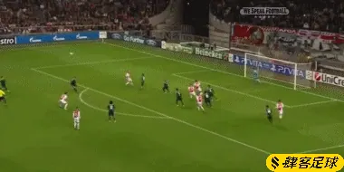
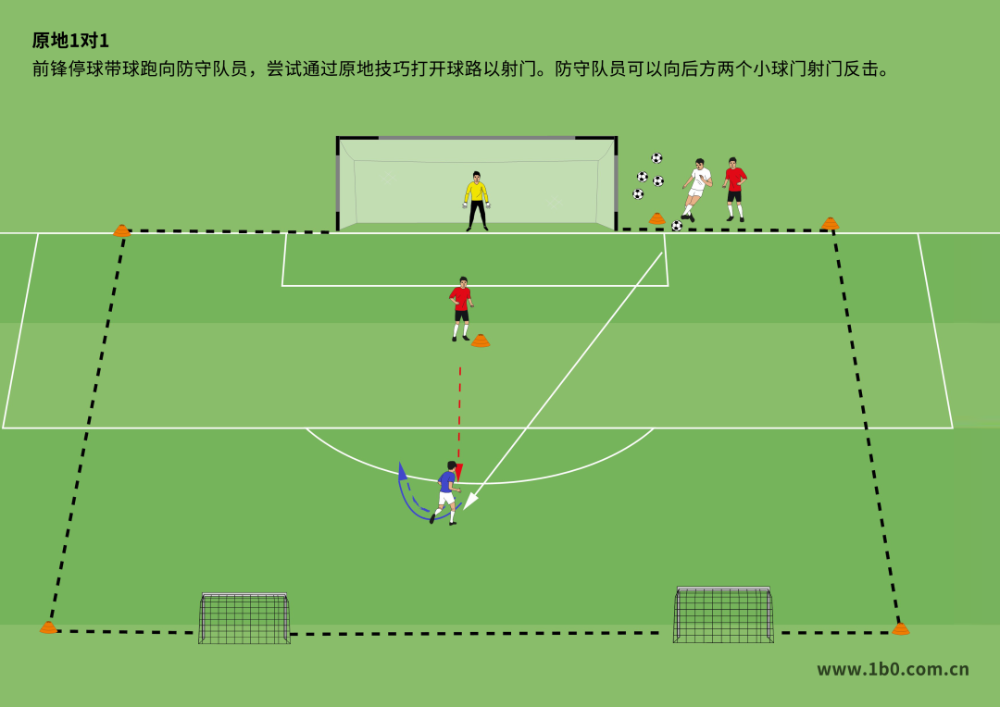
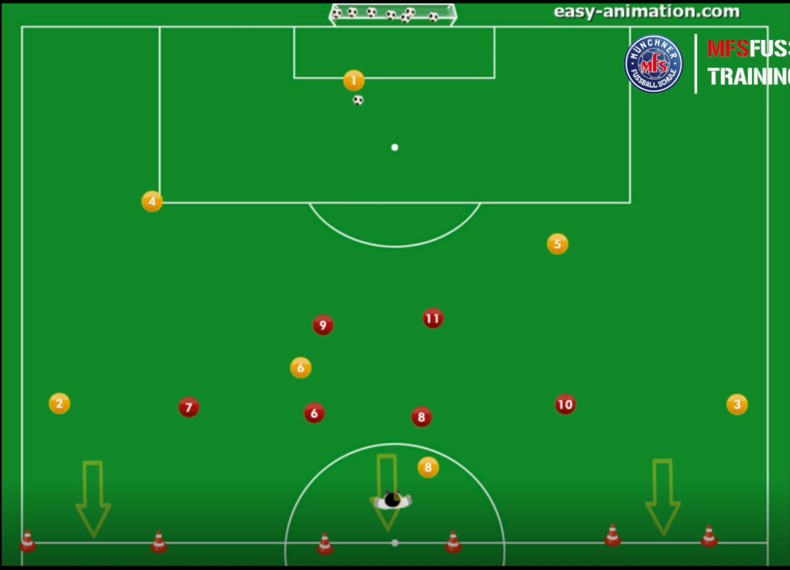

首先我们要思考一个问题，足球场上，怎样的防守才算是一次成功的防守？
- 场景一：对手边路拿球寻求1v1突破，我方边后卫看穿其意图，将球破坏出边线。
- 场景二：对手边路传中进我方禁区，我方中后卫抢在对手前锋身前，将球大脚解围。
上面两个场景算是我方的成功防守吗？很显然是不算的。
场景一，对手可以继续通过前场边线球持续施压。
场景二，对手外围控制住解围球后依然可以继续组织进攻。
只有真正夺下球权，双方攻守势异，才算是一次成功的防守。

打出一次赏心悦目的反击或许才能称得上一次成功的防守。
攻守转换思维模式
与之前讲过的停球一样，国内传统教材的训练模式中，依旧是把“防守”与“反击”这两个概念割裂开来。
由于孩子的思维是很简单的（相较成人），最初的防守训练中，无论是单人还是团队，孩子会把断球当成最终的目的，形成一种思维模式：
“先把球断下来，再想下一步怎么办”
这样的思维模式显然不利于孩子成年后适应现代足球的快节奏，显然不如让孩子一开始就形成正确的思维模式。
其实方法也很简单，12岁之前的孩子训练重点需要放在技术上，这个阶段的孩子在训练中最初接触攻防的概念就是在1v1训练中。我们只需要一个很简单的设置：

如上面的教案，我们只要在进攻方向的反向设置两个小球门，告诉防守方，抢下球后的目标是将球带入或者传入任意一个小球门。

团队的攻防演练也是一样，要给防守方设置反攻目标小球门。
如此，不需要教练过分强调，防守球员自然会在防守时甚至防守前自觉的观察前方小球门（己方留在前场准备反击的球员）位置，会思考得球后怎么把球输送过去。几次这样的训练课下来，快速由守转攻的思维模式自动就会在孩子脑袋中形成。
有了正确的思维模式后，还要让孩子掌握正确的方法论，在孩子技术能力达到一定水平后，可以安排nvn+x这样的游戏比赛训练，比如：
进一步强化孩子在攻守转换时的思维决策能力。
接下来，则是进攻方“防守准备”的训练。
具体的训练方法这里就不赘述了，大家可以访问一比零足球网、搜索关键词“快速攻守转换”或者“防守准备”，即可看到相关的视频教案。
PS：大家可以通过一**比零足球小程序方便的搜索和查找教案
总结
皮尔洛、哈维这样的球员为什么被称为“中场大师”，不单单是因为他们技术出众传球精准，更重要的是他们的思维决策能力。
而优秀的思维决策能力的前提，是要在孩童时期建立正确的球场思维模式，这一点是我们国内传统青训过去所忽视的部分。
正确的思维模式可以理解为最短的思考路径，受人体神经元构造限制，人类的思维速度是有上限的，因此球场上正确的思维模式可以帮助球员更快的思考决策。而没有形成正确思维模式的球员思考决策就会慢半拍，一步慢步步慢，比赛场上表现出来的就是跟不上对手的节奏，明明训练中的技战术都是没问题的，但比赛中就是发挥不出来。
更重要的是，思维模式这个东西，一旦成型是很难改变的，因此我们要在孩童阶段就给球员培养正确的思维模式。这也是近些年来青训各界都在强调训练要贴近比赛场景的原因，目的就是为了球员能在训练中养成更适应比赛的思维模式。
球场思维培养这个系列，会继续为大家分享训练中有助于培养正确思维模式的方法（或者说是更适应现代足球的思维模式），也欢迎大家私信或者留言讨论
文字与图片版权归各自权利人所有；排版根据抓取内容整理。